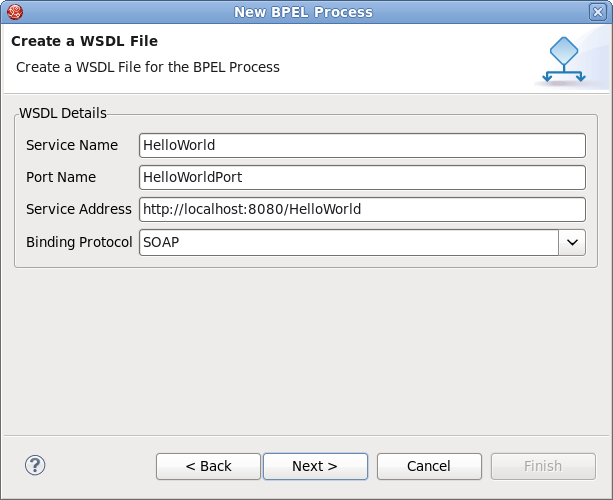

To create a new BPEL process, select File > New > Others... and then BPEL 2.0 > New BPEL Process File.
Click Next.
Enter the following information:
| Field | Value |
|---|---|
BPEL Process Name |
Enter a process name. For example, HelloWorld. |
Namespace |
Enter or select a namespace for the BPEL process. |
Template |
Select the appropriate template for the BPEL process. |

Click Next.
On the second page, you can customize your WSDL service details. Enter the following information:
| Field | Value |
|---|---|
Service Name |
A wsdl service name for the BPEL process. The default value is HelloWorld. |
Port Name |
A wsdl port name for the BPEL process. The default value is HelloWorldPort. |
Service Address |
An address of the WSDL service for the BPEL process. The default value is http://localhost:8080/HelloWorld. |
Binding Protocol |
The binding protocol that you use in the wsdl. You can choose SOAP or HTTP. The default value is SOAP. |

Click Next.
On the third page, you can select a folder for the
process file from the projects in your workspace. If a folder is
not selected, the default folder
HelloWorld/bpelContent
will be used.
Click Finish.
All of your files that are used in your BPEL project should be under the
bpelContent
folder of a BPEL project. Only in this case these files can be
deployed to BPEL runtime platforms.
This will create a simple BPEL process as shown in the image below.